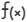

| Folder | A folder is used for structure. With this type of KPI, you can summarize or group several KPIs. No data is entered for the folder itself. |
| Textual (qualitative) | Use this category for KPIs that cannot be recorded as numbers or as pure yes/no categories. For example, the implementation of an existing code of conduct into everyday business life. |
| Numeric (quantitative) | This category is for KPIs that can be recorded as a value and expressed in figures, e.g., power consumption in kWh. |
| Conversion formula (quantitative) | This KPI type allows you to calculate CO2 equivalents via multiplication of a numeric KPI with a CO2 factor. |
|  Formula (quantitative) | This KPI type can pool several quantitative KPIs. It outputs the sum of the KPIs assigned to it. The detailed KPIs can be weighted with various factors. Note: Yearly and sub yearly KPIs can be inputted as formula content. |
| Yes/No (compliance) | A KPI of this type is used if a criterion can either be met or not met and if there are either no intermediate steps or these are of no interest. For example, the existence of a code of conduct. |
| Choice | A Choice KPI allows you to define a number of predefined choices, such as ‘Good’, ‘Medium’, ‘Bad’ etc. |
Simple text (qualitative) | This is a text indicator with a defined maximum number of characters. |
 ), Manage tags (
), Manage tags ( ), Edit standards (
), Edit standards ( ), Change KPI type (), and Export selected KPIs to Excel (
), Change KPI type (), and Export selected KPIs to Excel ( ).
). to create new KPIs. Clickto import a standard or to map standards. Click
to create new KPIs. Clickto import a standard or to map standards. Click  to import KPIs from Excel and
to import KPIs from Excel and  to export KPIs to Excel.
to export KPIs to Excel. to edit the KPI in multiple time periods or
to edit the KPI in multiple time periods or  to copy the KPI. Click
to copy the KPI. Click  to move the KPI.
to move the KPI. in the corresponding row to edit the Types and Tags. Select the Automatically copy values to next year checkbox to copy the values to the next year. Here you can also add KPI Images* of the SDG and GRI Standard for easy and visual assignment of KPIs.
in the corresponding row to edit the Types and Tags. Select the Automatically copy values to next year checkbox to copy the values to the next year. Here you can also add KPI Images* of the SDG and GRI Standard for easy and visual assignment of KPIs. to edit the standard or define Related KPIs.
to edit the standard or define Related KPIs. 
 Repeating structure
Repeating structure